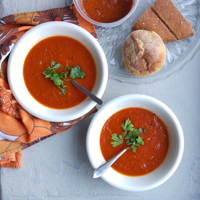

Tomaten soep
Tomaten soep is goed als voorgerecht
Ingrediënten
2 tomaten
1L water
1 pak fermesilli
Bereidingswijze
1. laat het water koken
2. doe de fermesilli er in
3. Snij de tomaten en doe die er ook in.
4. wacht 10 minuten
5. Enjoyyl.

Tip
Lekker met meergranenstokbrood.
Voorgerecht
Hooftgerecht
Nagerecht